Přehled
Synology Drive Server není jen sofistikovaný meziplatformový synchronizační software, ale představuje také chytrý způsob zálohování dat z osobních počítačů uživatelů. Jeho nástroj pro stolní počítače – Synology Drive Client – představuje řešení okamžitého, šířku pásma šetřícího zálohování v reálném čase a nabízí vynikající ochranu pomocí až 32 historických verzí každého souboru.
Nastavení služby Synology Drive Server v zařízení Synology NAS a stažení aplikace Synology Drive Client
- Přejděte do části Centrum balíčků, vyhledejte položku Synology Drive Server a potom klikněte na možnost Instalovat. Dojde k současnému stažení tří balíčků, Synology Drive Admin Console, Synology Drive ShareSync a Synology Drive.
- Spusťte balíček Synology Drive. V pravém dolním rohu se zobrazí výzva ke stažení aplikace Synology Drive Client.

Nebo klikněte na ikonu uživatele v levém dolním rohu a přejděte do části Klient > Stáhnout klienta.

Aplikaci Synology Drive Client lze případně stáhnout také z Centra pro stahování Synology. - Spusťte na počítači instalační program a postupujte podle pokynů pro instalaci aplikace Synology Drive Client. Po instalaci spusťte aplikaci Synology Drive Client kliknutím na možnost Začít.
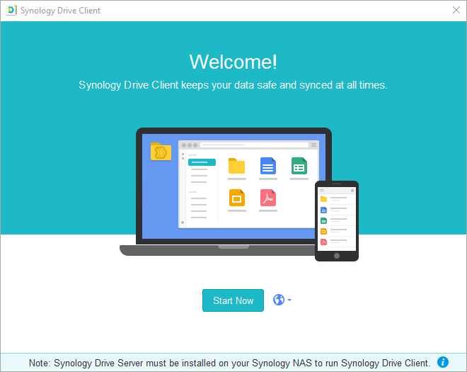 - Vyberte úlohu zálohování.
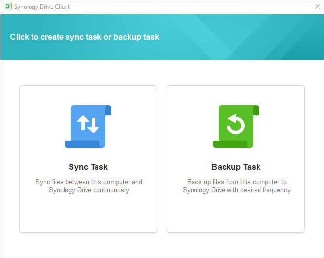 - Zadejte adresu nebo QuickConnect ID serveru Synology NAS se spuštěnou službou Synology Drive Server, uživatelské jméno a heslo. Můžete také kliknout na ikonu vyhledávání vpravo a služba Synology Drive Client automaticky vyhledá všechna zařízení Synology NAS v rámci místní sítě. Klikněte na možnost Další.
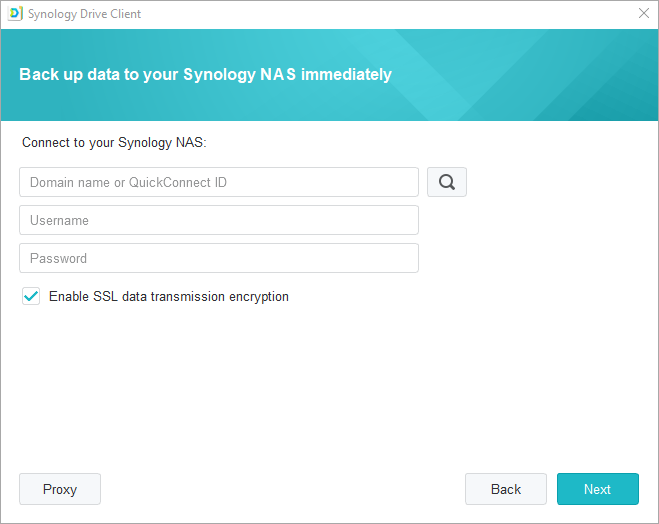 - Vyberte zdroj zálohování a zrušte zaškrtnutí všech podsložek, které synchronizovat nechcete. Služba Synology Drive Client vytvoří na vybraném cíli zálohování zálohovací složku s názvem vašeho počítače. Podle výchozího nastavení bude jako cílová složka vybrána složka home. Pokud chcete použít složku, která není na seznamu, obraťte se na správce systému. Správci systému si mohou přečíst stránku nápovědy služby Synology Drive Admin Console. Na možnost Pravidla zálohování můžete kliknout i tehdy, když si přejete nastavit filtry či pravidla synchronizace. Klikněte na možnost Další.
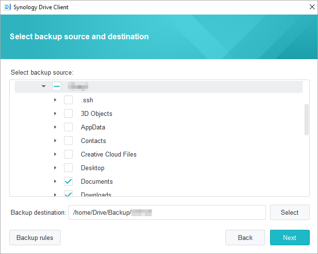 - Vyberte režim zálohování a klikněte na možnost Další.
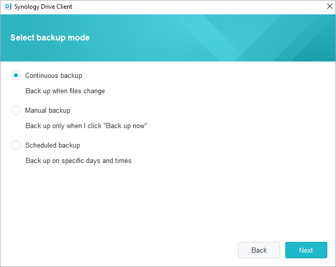 - Zkontrolujte shrnutí nastavení zálohování. Chcete-li provést nějaké změny, klikněte na možnost Zpět nebo dokončete nastavení kliknutím na možnost Hotovo.
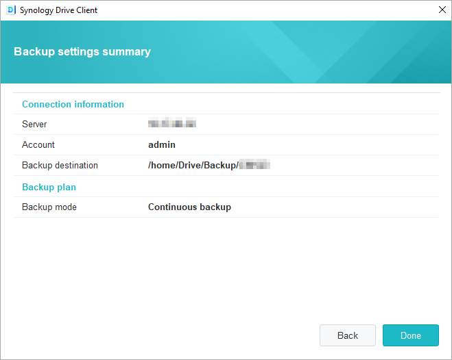 - Postup zálohování se zobrazuje v hlavním okně.
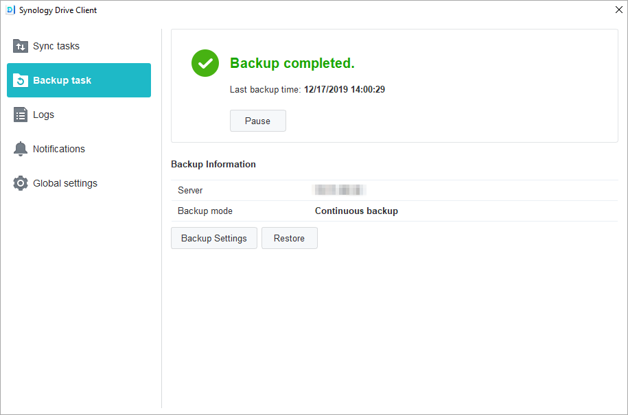
Stažení nebo obnovení předchozí verze synchronizovaného souboru v aplikaci Synology Drive Client
- V aplikaci Synology Drive Client přejděte do části Úlohy zálohování > Obnovení a vyhledejte soubor nebo složku, kterou chcete obnovit.
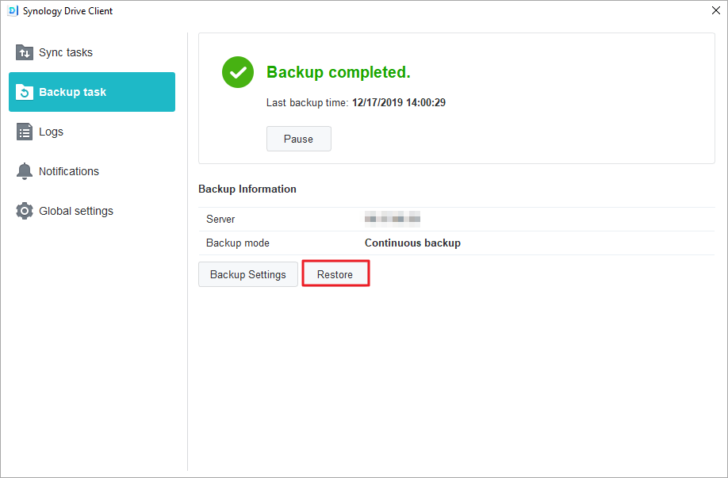 - Vyberte soubor, který chcete načíst, a klikněte na možnost Procházet předchozí verze. Jestliže byl soubor z počítače omylem odstraněn nebo odebrán, můžete ho obnovit kliknutím na možnost Obnovit.
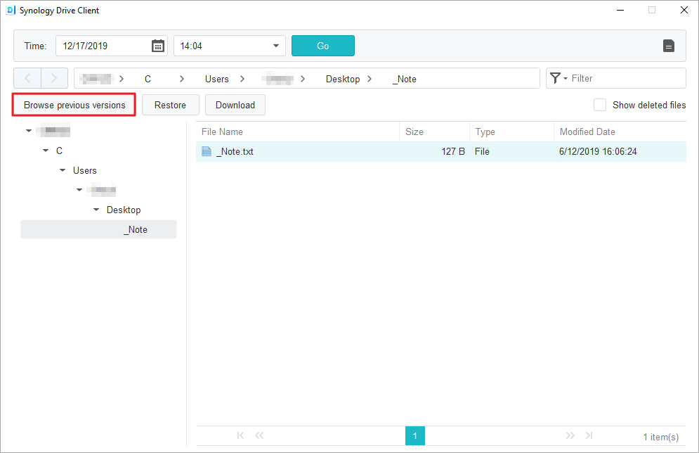 - Vyberte verzi souboru, který chcete stáhnout, a klikněte na možnost Stáhnout.
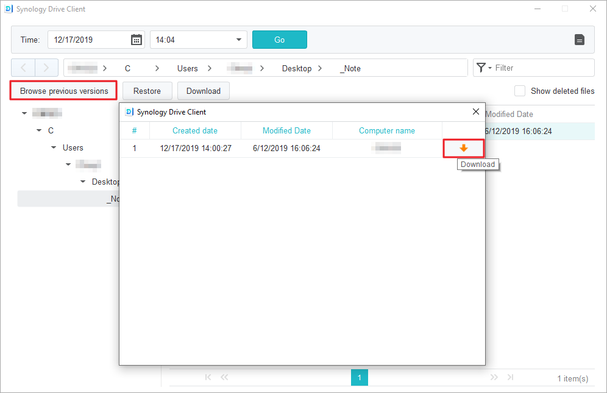
Stažení nebo obnovení předchozí verze synchronizovaného souboru ve službě Synology Drive Admin Console
- V systému DSM přejděte do části Synology Drive Admin Console > Složka týmu, klikněte na složku, ve které se nachází soubor, který chcete obnovit, a klikněte na možnost Průzkumník verzí.
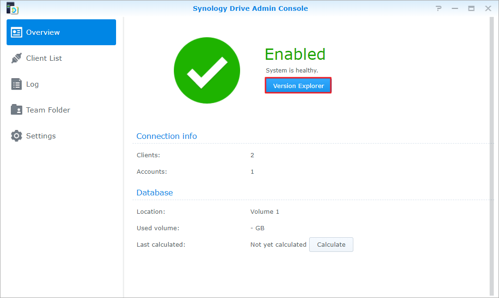 - V okně Průzkumník verzí klikněte na soubor, který chcete načíst, a klikněte na možnost Procházet předchozí verze.

- Vyberte verzi souboru, který chcete stáhnout, a klikněte na možnost Stáhnout. Nebo pokud si jste jistí, že chcete vybranou verzi obnovit, klikněte na možnost Obnovit – aktuální verze se takto přepíše.
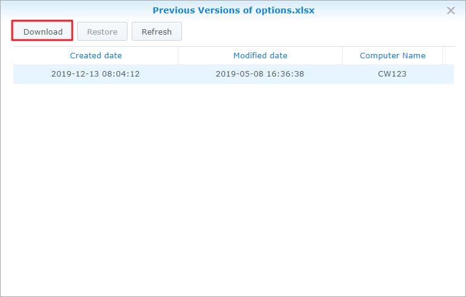
Další ochrana dat
Další způsoby, jak chránit a zálohovat data, objevíte po kliknutí na tento odkaz, kde se nacházejí další návody týkající se dalších služeb zálohování nabízených systémem DSM.